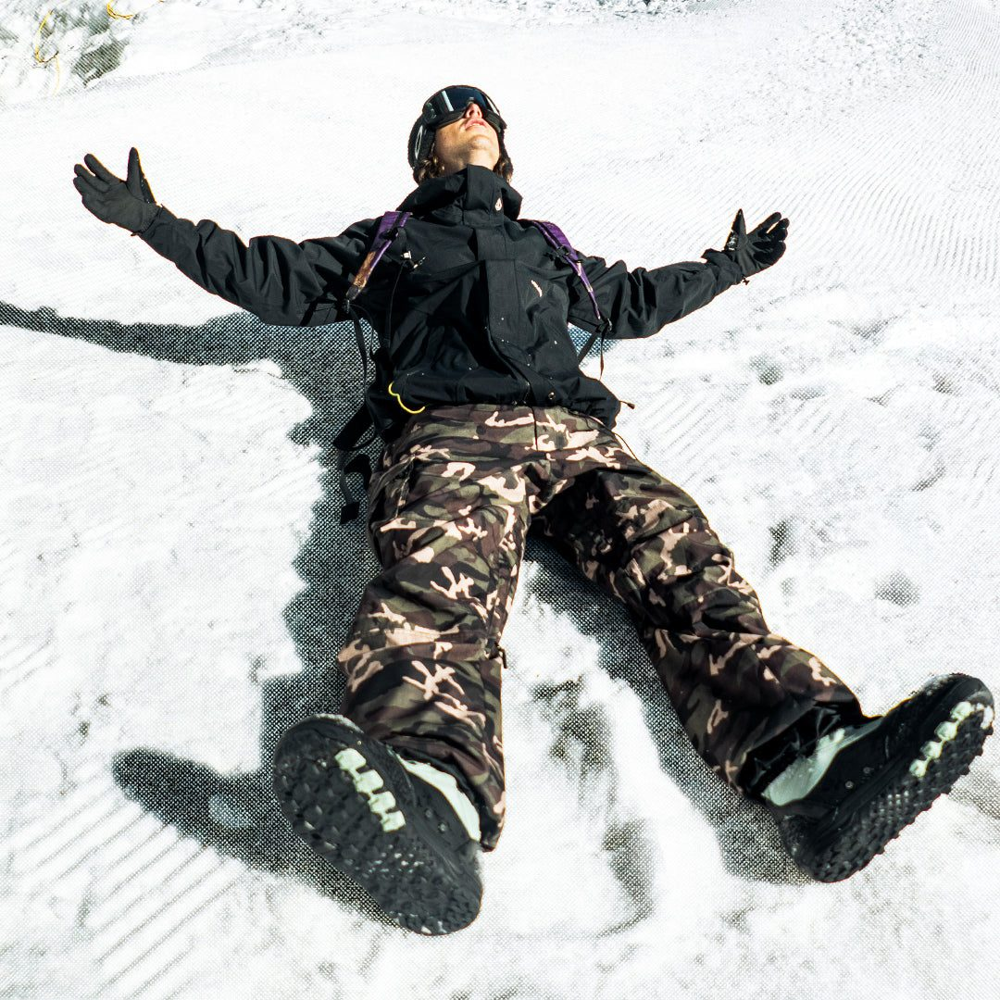
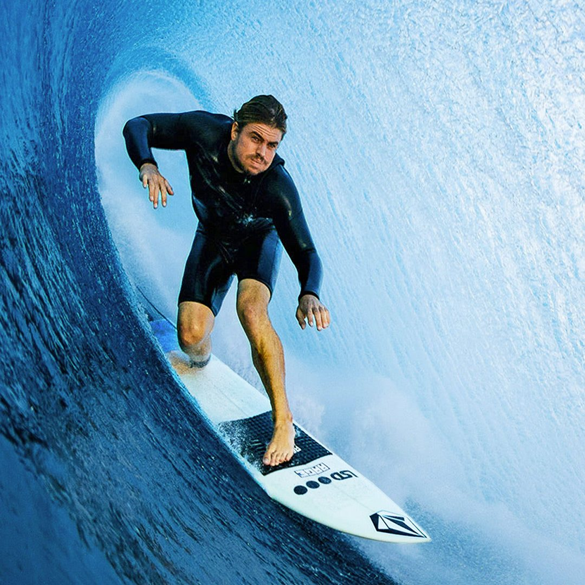
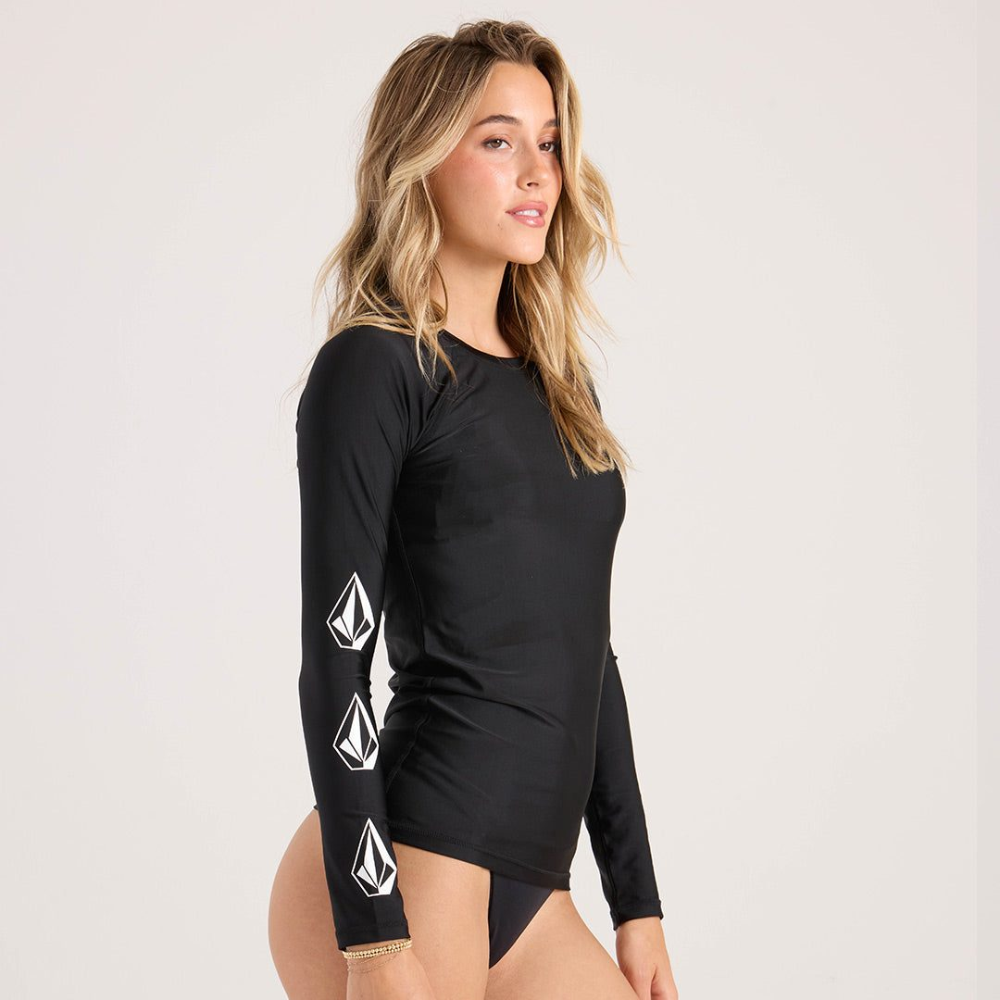
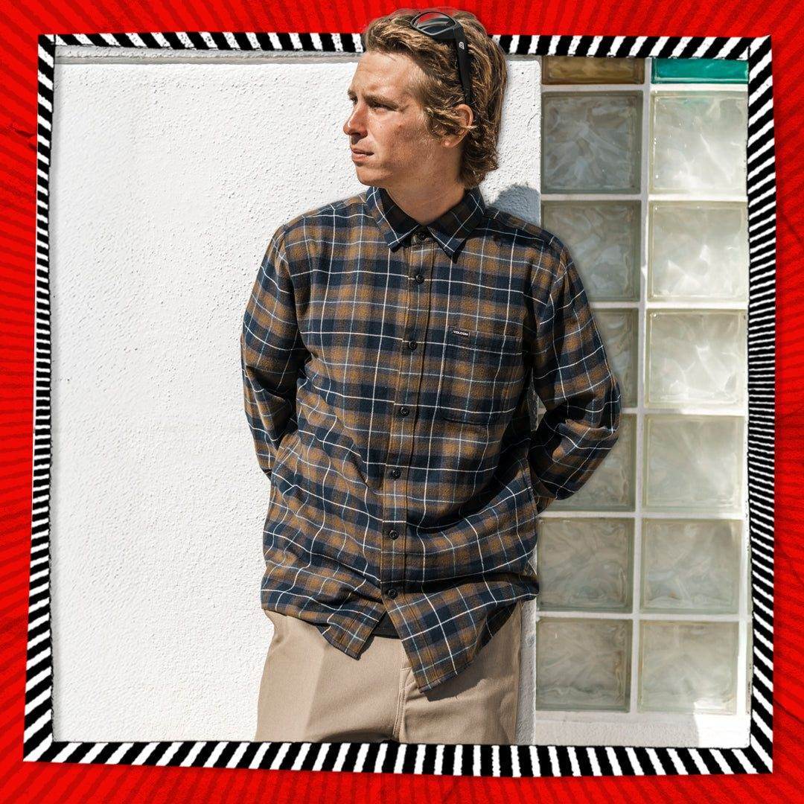
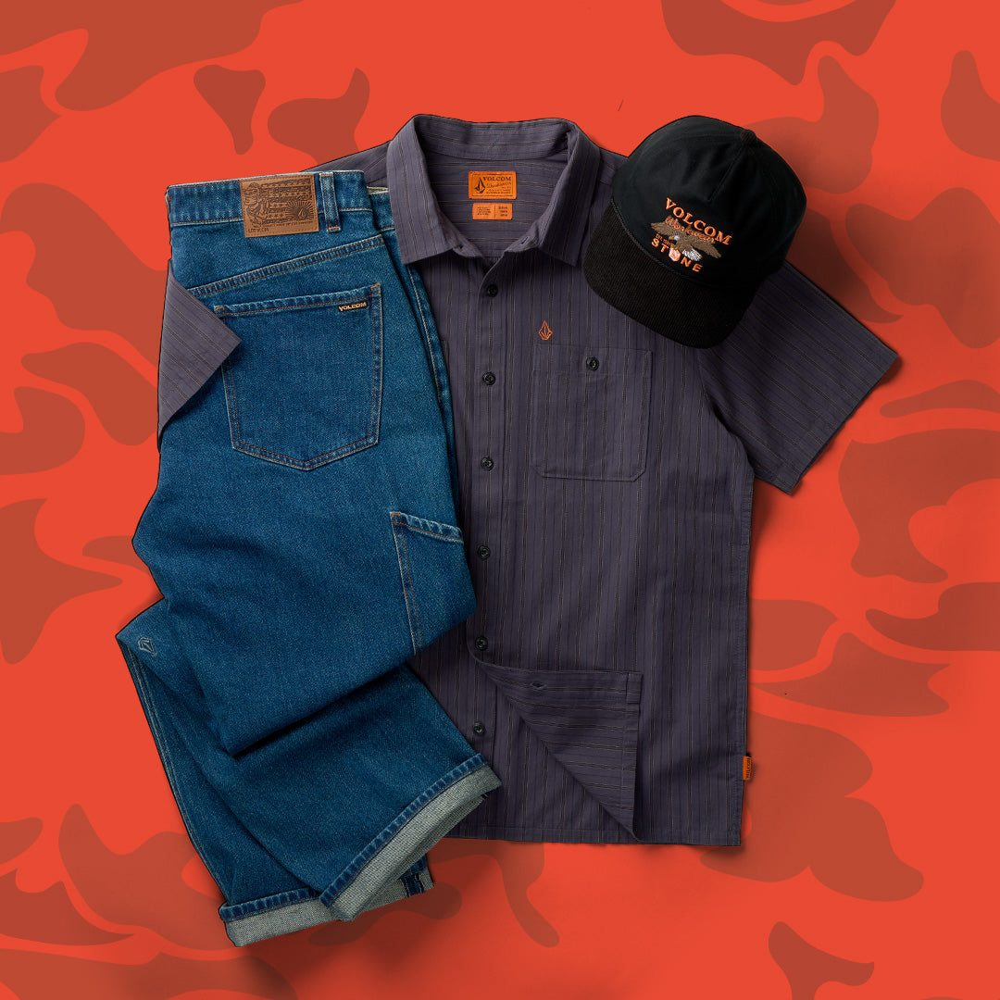
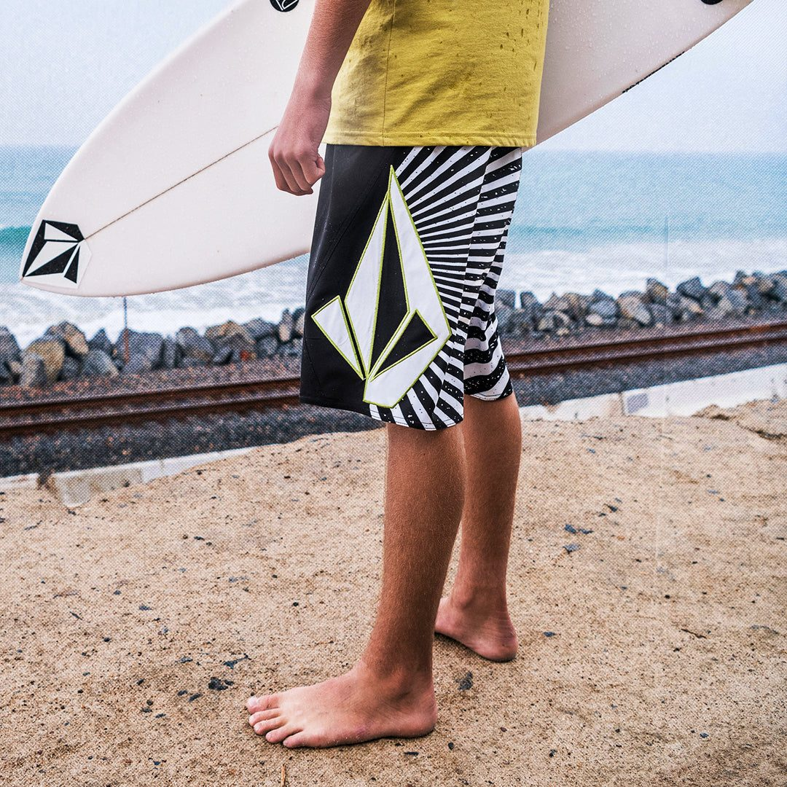

Volcom
Company study · 2026-11-20
Loud and sun-faded. Volcom shoots skate bowls, wave tubes and snow angels in high-contrast action, then sets product on saturated grounds: red camo, zigzag frames, optical stripes. Charcoal flannel and denim carry the workwear side, black logo-print rashguards and striped boardshorts the swim side. Color is primary and graphic.
 (01)
(01)


(02)

(03)

(04)

(05)

(06)

(07)Palette · measured from images
#E8E3E0#D23A28#39363B#C5B5A7#98C9E6#141417Visual themes
- Action first
- Key motifs: skate bowl, wave tube, snow angel. Sub motifs: black and white film grain, fisheye wide angle, camo.
- Graphic ground
- Key motifs: red camo ground, zigzag frame, optical stripes, stone logo. Sub motifs: sticker-style type, bold borders.
- Workwear and flannel
- Key motifs: plaid flannel, denim, work shirt, black cap. Sub motifs: flat lay, tonal charcoal.
- Swim and print
- Key motifs: boardshorts, rashguards, wetsuits with stone-logo prints. Sub motifs: beach light, pale studio ground.
Color palette
- Fog white #e8e3e0
- Studio grounds and snow.
- Stoke red #d23a28
- Camo ground, frame borders and sale graphics.
- Charcoal #39363b
- Flannel, work shirt and wetsuit.
- Sand #c5b5a7
- Beach sand, denim shorts and skin.
- Sky blue #98c9e6
- Wave face and open sky.
- Black #141417
- Rashguard, cap and wetsuit.
Visual elements
- Photography
- Action shots in hard daylight and category tiles in a square crop; products as flat lays on a colored ground and on models against pale studio walls.
- Type and graphics
- The stone logo in a circle, collage tiles with cut-paper lettering for holiday campaigns, zigzag border frames.
- Layout habits
- Square category tiles lead the home page: skate, trunks, snow and workwear; navigation reads New, Shop All, Snow, Clothing, Accessories, Kids.
Notable products
- Boardshorts
- Optical-stripe and logo prints in trunks and hybrid shorts.
- Flannel shirts
- Charcoal and tan plaid.
- Workwear set
- Denim shorts, work shirt and cap.
Method and limits
- Palette basis
- five of the board images (the skate and snow images are left out); k-means in Lab, six clusters kept; studio grounds are part of the measurement
- Limits
- Pages read 2026-11-20, plain HTTP fetch, no login: https://www.volcom.com/ and the best-sellers, men’s surf and swim, women’s surf and swim collections. Images are the site’s 1080 px square tiles; fabric content and construction are not stated. Colors are measured from lit, edited photographs.
Credits and licenses
(01) Skater mid-carve in a concrete bowl, black and white, palms behind. Volcom. Brand image, study use. source
(02) Snowboarder lying in fresh snow in camo pants, arms spread. Volcom. Brand image, study use. source
(03) Surfer in a black wetsuit inside a blue wave tube. Volcom. Brand image, study use. source
(04) Woman in a black long-sleeve rashguard with a stone-logo print on the sleeve, on a pale gray ground. Volcom. Brand image, study use. source
(05) Plaid flannel shirt in charcoal and tan, in a red frame with a zigzag border. Volcom. Brand image, study use. source
(06) Flat lay of blue denim shorts, a gray work shirt and a black cap on a red camo ground. Volcom. Brand image, study use. source
(07) Black and white optical-stripe boardshorts, a surfboard and a beach behind. Volcom. Brand image, study use. source